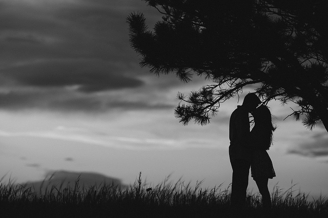

景深
许多照片是用中等大小的光圈拍摄的（诸如f/8）。用这样的光圈能够良好地表现从清晰到模糊的渐变。但是用f/读数的两个极端光圈来拍摄的话，就缺乏这种渐变，而且这种渐变的缺乏是很明显的。
最大的光圈（通常是f/1.8）拍出的景深最浅。最小的光圈（通常是f/16）拍出的景深则最大。
大光圈能用于选择聚焦拍摄，使画面上仅有主体显得清晰，而前景和背景都虚化，当你用远摄镜头对较近的主体进行选择聚焦时，这种效果就更明显。
大景深使前景和背景都显得清晰。它可以将广角镜头或标准镜头置于小光圈进行拍摄来获取。可以用景深标尺或者景深预视按钮来估计给定光圈下的景深。前景和背景同时清晰的效果是只有摄影才能获得的。
